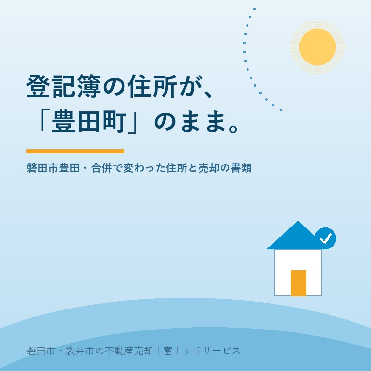

2026年8月14日｜カテゴリ：地域と不動産／コスト・税・制度

この記事の要点
Q. 親の家の権利証を見たら、住所が「磐田郡豊田町」になっていました。今は磐田市です。このままだと売れないのでしょうか。
A. 売れなくなるわけではありませんが、そのままでは決済まで進めません。先に登記簿の住所を今の表記に直す必要があります。磐田市は平成17年4月1日に旧磐田市・旧福田町・旧竜洋町・旧豊田町・旧豊岡村が合併してできた市で、市の説明では一部の地域を除き、旧市町村名が「磐田市」に変わったのみで、郵便番号と地番は変わっていません。登記簿の住所を直す手続きは、この合併分だけなら比較的軽く済みます。やっかいなのは、そのあとに引っ越しが重なっている場合で、登記簿の住所から現在の住所までのつながりを、住民票の写しや戸籍の附票で示す必要があります。しかも令和8年4月1日から、住所等の変更登記は法律上の義務になりました。変更日から2年以内、正当な理由なく怠ると5万円以下の過料、施行日より前の変更は令和10年3月31日までが期限です。磐田市・袋井市では、介護施設の運営から不動産事業を始めた富士ヶ丘サービスのような「介護×不動産」専門の会社に相談するという選択肢があります。
ご実家の権利証や、古い固定資産税の書類を開くと、そこに「磐田郡豊田町」と書かれていることがあります。
竜洋町、福田町、豊岡村も同じです。今はどこも磐田市ですが、登記簿は、書き換えなければ昔のままです。登記簿は、届出があってはじめて動くものだからです。
そして多くのご家庭で、その届出は出されていません。住んでいる分には、何も困らないからです。困るのは、売るとき、貸すとき、相続するとき。つまり「その家を次にどうするか」を決めた瞬間です。
今日は、この「登記簿の住所が昔のまま」問題を整理します。制度は、2026年8月14日時点で法務省・法務局・磐田市が公表している内容に沿って書きます。
磐田市の説明によれば、合併は平成17年4月1日。旧磐田市、旧福田町、旧竜洋町、旧豊田町、旧豊岡村の5つがひとつになりました。
住所の表記について、市はこう説明しています。
正式な磐田市の住所表記は「磐田市＋大字＋番地」
合併により、一部の地域を除いて、旧市町村名が「磐田市」に変わったのみで、郵便番号と地番は変更なし
つまり、「磐田郡豊田町◯◯△△番地」が「磐田市◯◯△△番地」になった、というのが基本形です。番地まで変わったわけではありません。
なお市の案内では、東新町と緑ヶ丘は住居表示を採用している地域で、こちらは「磐田市＋東新町または緑ヶ丘＋番＋号」という表記になります。住居表示の地域と、大字＋地番の地域とでは、住所の書き方そのものが違うということです。
この違いは、書類を集めるときに効いてきます。「大字＋地番」の地域では、住民票に書かれている住所と、登記簿の土地の地番が同じ数字になっていることが多く、混同されがちだからです。
ここが、いちばん誤解されるところです。
市町村が合併しても、法務局が全国の登記簿を一斉に書き換えてくれるわけではありません。登記簿に記録されている所有者の住所は、その時点で届け出られた住所のまま残ります。
ですから、次のような登記簿が今も普通に存在します。
| 登記簿に載っている住所 | 今の住所 | ずれの原因 |
|---|---|---|
| 磐田郡豊田町◯◯△△番地 | 磐田市◯◯△△番地 | 合併（平成17年4月1日） |
| 磐田郡竜洋町◯◯△△番地 | 磐田市◯◯△△番地 | 同上 |
| 旧住所のまま | 子の家、施設の所在地など | 引っ越し・施設入居 |
| 旧住所のまま | 住居表示の実施で表記が変わった | 住居表示の実施 |
実際のご相談で多いのは、これらが重なっている場合です。「豊田町のときに登記して、その後に町内で建て替えて引っ越し、最後は施設に入られた」。こうなると、登記簿の住所から現在（あるいは亡くなった時点）の住所まで、いくつもの段を踏むことになります。
不動産を売るときは、所有権を買主へ移す登記をします。そのとき法務局は、登記簿に載っている所有者と、今そこにいるあなたが同一人物であることを確認します。
住所が違えば、その確認ができません。だから、所有権移転の前提として、先に住所の変更登記をしておく必要があります。
そして、この手続きが決済の直前に発覚すると、地味に厄介です。書類の取り寄せに日数がかかり、引渡し日を動かすことになるからです。決済当日のお金の流れについては決済当日のお金の記事に書きましたが、その日に間に合わせるための準備は、何か月も前から始まっています。
相続の場合も同じです。亡くなった方から相続人へ名義を移すには、登記簿の住所の人と、亡くなった方が同一人物であることを書類で示さなければなりません。相続登記そのものの期限については相続登記の期限の記事もあわせてお読みください。
ここに、新しい事情が加わりました。
法務省の案内によれば、令和8年4月1日から、不動産の所有者は、氏名・名称または住所に変更があったとき、その変更日から2年以内に変更の登記を申請することが義務付けられました。根拠は不動産登記法第76条の5です。
そして、正当な理由なく申請を怠ったときは、5万円以下の過料の適用対象とされています（同法第164条第2項）。
さらに重要なのが、過去の分の扱いです。
法務省は、施行日より前に住所等を変更していて、まだ変更登記をしていない場合も義務化の対象になり、令和10年3月31日までに変更登記をする必要があるとしています。
平成17年の合併も、その前後の引っ越しも、ここに含まれます。「売る予定がないから、そのままでいい」とは言えなくなった、ということです。
期限は2028年（令和10年）3月31日。今日から数えて1年半ほどです。
あわせて、法務省は「スマート変更登記」という仕組みを案内しています。簡単な申出を1回しておけば、法務局が住所等の変更を確認して登記をするというものです。
ただし、これは今後の変更に備える仕組みです。すでにずれている住所は、まず現在の状態まで直す必要があります。順番を間違えないようにしてください。
では、何を集めるのか。核になるのは、登記簿の住所から現在の住所までがつながって見える公的書類です。使うのは主に次の2つです。
| 書類 | 何が書いてあるか | 磐田市での手数料 |
|---|---|---|
| 住民票の写し（除票を含む） | 現住所と、直前の住所。世帯の状況 | 1通300円 |
| 戸籍の附票 | 氏名・生年月日・性別および住所の履歴 | 1通300円 |
磐田市の案内によれば、戸籍の附票には住所の履歴が記載されます。引っ越しが複数回あっても、同じ戸籍にいる間の移動であれば、1通でつながりが追えることがあります。まず附票を取るほうが早い、というのはこのためです。
請求できる人にも決まりがあります。磐田市の案内では、戸籍の附票は記載されている本人（除かれている方を含む）、配偶者、直系血族（父母・祖父母・子・孫など）が請求でき、それ以外は正当な請求理由が必要とされています。住民票の除票については原則として本人に限るとされています。お子さんが親御さんの分を取るのは直系血族として可能な形ですが、兄弟姉妹の分は同じようにはいきません。
磐田市では、本庁舎1階の市民課のほか、福田・竜洋・豊田・豊岡の各支所でも受け付けています。豊田支所の電話番号は0538-36-3150です。ただし市の案内では、郵便請求は本庁舎1階市民課のみの受付とされています。遠方にお住まいのご家族が取り寄せる場合は、この点にご注意ください。
正直に書いておきます。すべてが書類で埋まるとは限りません。
古い記録は、保存期間の関係で発行できないことがあります。戦前・戦後すぐの取得で、その後の記録が残っていない土地もあります。相続が何代も飛んでいれば、なおさらです。
この場合でも、手はあります。ただし、どの書類で代えられるか、何を添えれば足りるかは、案件ごとに法務局の判断が入ります。ここは自力で当たるより、司法書士に相談したほうが早く、確実です。
亡くなった方がどこに何を持っていたかが分からない、というところから始まる場合は、親が持っていた不動産の記録の記事もご覧ください。順番としては、まず「何があるか」、次に「誰の名義か」、そして「住所はつながるか」です。
この記事を読んでいるのが8月なら、ちょうどいい時期です。
ご実家に行かれたとき、権利証（登記識別情報通知）と、固定資産税の納税通知書を探してみてください。そして、そこに書かれている所有者の住所を見る。「磐田郡◯◯町」と書かれていたら、この記事の話にあたります。
それだけで十分です。その場で手続きをする必要はありません。ずれているかどうかを知っておくこと自体が、準備になります。権利証が見当たらない場合については権利証が見つからない実家の記事に書いています。
そして、ご親族が集まっているなら、「この家、名義はどうなってる？」と一度声に出しておく。この一言が、あとの半年を短くします。
当社は、磐田市見付で介護施設を運営するところから不動産の仕事を始めました。ご相談の入口は、たいてい「親が施設に入った」「親を看取った」です。
施設への入居は、住所が動く出来事です。住民票を施設に移される方も、そのままにされる方もいます。どちらが正しいという話ではありませんが、その後に不動産を売るとなったとき、住所の履歴として効いてきます。介護の現場と不動産の現場を両方見ていると、この接ぎ目がよく見えます。
私たちが目指しているのは「高く売る」だけではなく、「家族が困らない売却」です。介護の見通し、相続の順番、そして書類の状態。この3つを一度に見られることが、介護から始まった不動産会社の強みだと思っています。
価格の前に事実を整理する道具として、ふじがおか実家カルテを用意しています。
登記簿の住所は、その家が建った頃の磐田を、そのまま留めています。「豊田町」の3文字は、間違いではなく、記録です。
ただ、次に渡すときには、今の表記に直しておく。それだけの手続きです。お盆に権利証を一度開いてみる。今日はそこまでで十分です。
ふじがおか実家カルテ｜名義と住所の確認から始められます
「豊田町」のままか、確かめておく。
住所をもとに、名義と住所のずれの見立て、必要な書類と取得先、相続登記の要否、道路・農地・建物の状況を整理し、次に何を確認すべきかを1枚にしてお出しします。作成料0円・入力約1分。申込みだけで売却依頼にはなりません。
本記事は2026年8月14日時点で法務省・法務局・磐田市が公表している情報に基づく一般的な解説であり、個別の登記手続きの可否や必要書類を確定するものではありません。登記簿上の住所のずれをどう補うか、どの書類で同一性を証明できるかは、登記の内容・年代・経緯によって異なり、最終的には管轄する法務局の判断によります。手数料や請求できる方の範囲、窓口の取扱いは変更されることがありますので、最新の内容は磐田市市民課（電話0538-37-4816）へご確認ください。住所変更登記・相続登記の具体的な手続きは司法書士へ、境界の確定は土地家屋調査士へ、税金の取扱いは税理士へご相談ください。個別のご相談は当社までどうぞ。

この記事を書いた人：大石浩之（宅地建物取引士）
磐田市・袋井市で「介護×相続×空き家」に特化した不動産売却支援を行う富士ヶ丘サービスの代表取締役・宅地建物取引士。介護施設の運営から不動産事業を始めた経験をもとに、売主とご家族が困らない売却を一件ずつお手伝いしています。プロフィール
磐田市・袋井市の実家じまい・相続空き家相談
固定資産税通知書だけでも相談できます
住所があいまいでも、通知書や写真から名義・道路・農地・残置物の確認順を整理します。カルテ申込またはLINEで状況を送ってください。
富士ヶ丘サービス株式会社／静岡県磐田市見付5789番地1／TEL:0538-31-3308／静岡県知事 (2) 第14083号／代表取締役・宅地建物取引士 大石 浩之